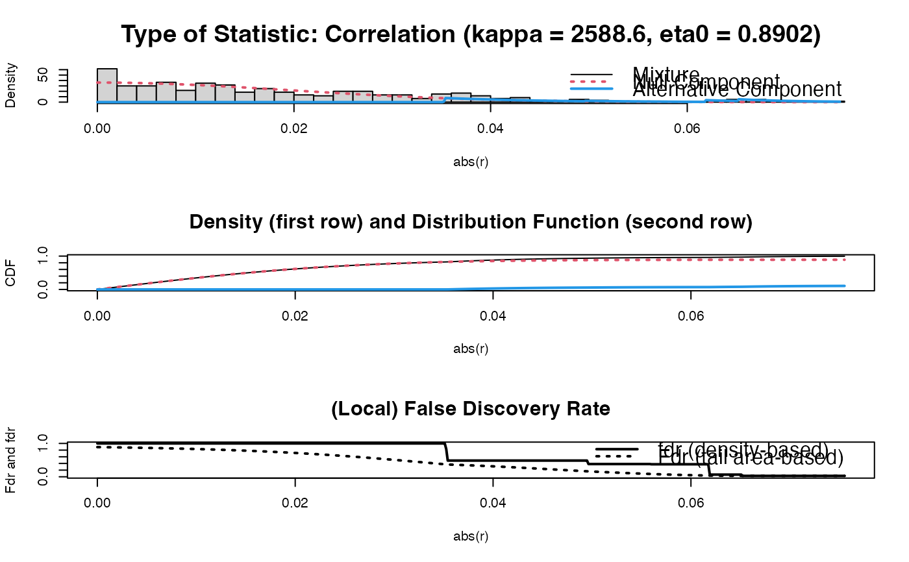
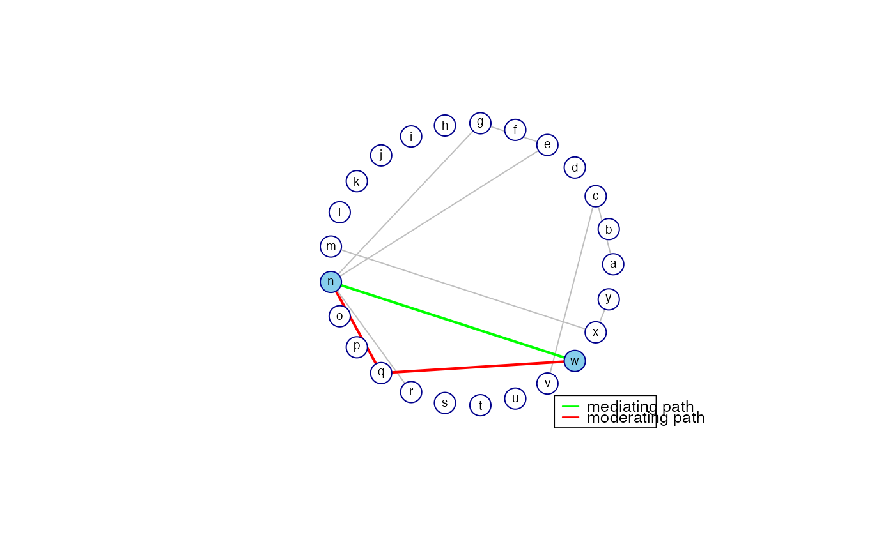

Function that calculates, for a specified node pair representing endpoints, path statistics from a sparse precision matrix. The sparse precision matrix is taken to represent the conditional independence graph of a Gaussian graphical model. The contribution to the observed covariance between the specified endpoints is calculated for each (heuristically) determined path between the endpoints.
GGMpathStats(
P0,
node1,
node2,
neiExpansions = 2,
verbose = TRUE,
graph = TRUE,
nrPaths = 2,
lay = "layout_in_circle",
coords = NULL,
nodecol = "skyblue",
Vsize = 15,
Vcex = 0.6,
VBcolor = "darkblue",
VLcolor = "black",
all.edges = TRUE,
prune = TRUE,
legend = TRUE,
scale = 1,
Lcex = 0.8,
PTcex = 2,
main = ""
)Sparse (possibly standardized) precision matrix.
A numeric specifying an endpoint. The numeric should
correspond to a row/column of the precision matrix and as such represents
the corresponding variable.
A numeric specifying a second endpoint. The numeric
should correspond to a row/column of the precision matrix and as such
represents the corresponding variable.
A numeric determining how many times the
neighborhood around the respective endpoints should be expanded in the
search for shortest paths between the node pair.
A logical indicating if a summary of the results
should be printed on screen.
A logical indicating if the strongest paths should be
visualized with a graph.
A numeric indicating the number of paths (with the
highest contribution to the marginal covariance between the indicated node
pair) to be visualized/highlighted.
A character mimicking a call to igraph
layout functions. Determines the placement of vertices.
A matrix containing coordinates. Alternative to the
lay-argument for determining the placement of vertices.
A character determining the color of node1 and
node2.
A numeric determining the vertex size.
A numeric determining the size of the vertex labels.
A character determining the color of the vertex
borders.
A character determining the color of the vertex
labels.
A logical indicating if edges other than those
implied by the nrPaths-paths between node1 and node2 should
also be visualized.
A logical determining if vertices of degree 0 should be
removed.
A logical indicating if the graph should come with a
legend.
A numeric representing a scale factor for visualizing
strenght of edges. It is a relative scaling factor, in the sense that the
edges implied by the nrPaths-paths between node1 and node2
have edge thickness that is twice this scaling factor (so it is a scaling
factor vis-a-vis the unimplied edges).
A numeric determining the size of the legend box.
A numeric determining the size of the exemplary lines in
the legend box.
A character giving the main figure title.
An object of class list:
A matrix specifying
the paths, their respective lengths, and their respective contributions to
the marginal covariance between the endpoints.
A list
representing the respective paths as numeric vectors.
A
data.frame in which each numeric from paths is connected to an
identifier such as a variable name.
The conditional independence graph (as implied by the sparse precision
matrix) is undirected. In undirected graphs origin and destination are
interchangeable and are both referred to as 'endpoints' of a path. The
function searches for shortest paths between the specified endpoints
node1 and node2. It searches for shortest paths that visit
nodes only once. The shortest paths between the provided endpoints are
determined heuristically by the following procedure. The search is initiated
by application of the get.all.shortest.paths-function from the
igraph-package, which yields all shortest paths between the
nodes. Next, the neighborhoods of the endpoints are defined (excluding the
endpoints themselves). Then, the shortest paths are found between: (a)
node1 and node Vs in its neighborhood; (b) node Vs in
the node1-neighborhood and node Ve in the
node2-neighborhood; and (c) node Ve in the
node2-neighborhood and node2. These paths are glued and new
shortest path candidates are obtained (preserving only novel paths). In
additional iterations (specified by neiExpansions) the node1-
and node2-neighborhood are expanded by including their neighbors
(still excluding the endpoints) and shortest paths are again searched as
described above.
The contribution of a particular path to the observed covariance between the
specified node pair is calculated in accordance with Theorem 1 of Jones and
West (2005). As in Jones and West (2005), paths whose weights have an
opposite sign to the marginal covariance (between endnodes of the path) are
referred to as 'moderating paths' while paths whose weights have the same
sign as the marginal covariance are referred to as 'mediating' paths. Such
paths are visualized when graph = TRUE.
All arguments following the graph argument are only (potentially)
used when graph = TRUE. When graph = TRUE the conditional
independence graph is returned with the paths highlighted that have the
highest contribution to the marginal covariance between the specified
endpoints. The number of paths highlighted is indicated by nrPaths.
The edges of mediating paths are represented in green while the edges of
moderating paths are represented in red. When all.edges = TRUE the
edges other than those implied by the nrPaths-paths between
node1 and node2 are also visualized (in lightgrey). When
all.edges = FALSE only the mediating and moderating paths implied by
nrPaths are visualized.
The default layout gives a circular placement of the vertices. Most layout
functions supported by igraph are supported (the function is
partly a wrapper around certain igraph functions). The igraph
layouts can be invoked by a character that mimicks a call to a
igraph layout functions in the lay argument. When using
lay = NULL one can specify the placement of vertices with the
coords argument. The row dimension of this matrix should equal the
number of (pruned) vertices. The column dimension then should equal 2 (for
2D layouts) or 3 (for 3D layouts). The coords argument can also be
viewed as a convenience argument as it enables one, e.g., to layout a graph
according to the coordinates of a previous call to Ugraph. If both
the the lay and the coords arguments are not NULL, the lay argument
takes precedence
The arguments Lcex and PTcex are only used when legend =
TRUE. If prune = TRUE the vertices of degree 0 (vertices not
implicated by any edge) are removed. For the colors supported by the
arguments nodecol, Vcolor, and VBcolor, see
https://stat.columbia.edu/~tzheng/files/Rcolor.pdf.
Eppstein (1998) describes a more sophisticated algorithm for finding the top k shortest paths in a graph.
Eppstein, D. (1998). Finding the k Shortest Paths. SIAM Journal on computing 28: 652-673.
Jones, B., and West, M. (2005). Covariance Decomposition in Undirected Gaussian Graphical Models. Biometrika 92: 779-786.
## Obtain some (high-dimensional) data
p <- 25
n <- 10
set.seed(333)
X <- matrix(rnorm(n*p), nrow = n, ncol = p)
colnames(X) <- letters[1:p]
## Obtain regularized precision under optimal penalty
OPT <- optPenalty.LOOCVauto(X, lambdaMin = .5, lambdaMax = 30)
## Determine support regularized standardized precision under optimal penalty
PC0 <- sparsify(OPT$optPrec, threshold = "localFDR")$sparseParCor
#> Step 1... determine cutoff point
#> Step 2... estimate parameters of null distribution and eta0
#> Step 3... compute p-values and estimate empirical PDF/CDF
#> Step 4... compute q-values and local fdr
#> Step 5... prepare for plotting

#>
#> - Retained elements: 11
#> - Corresponding to 3.67 % of possible edges
#>
## Obtain information on mediating and moderating paths between nodes 14 and 23
pathStats <- GGMpathStats(PC0, 14, 23, verbose = TRUE, prune = FALSE)
#> Covariance between node pair : 0.06757
#> ----------------------------------------
#> path length contribution
#> 1 14--23 1 0.07211
#> 2 14--17--23 2 -0.00453
#> ----------------------------------------
#> Sum path contributions : 0.06757
#> Warning: 'as.is' should be specified by the caller; using TRUE
#> Warning: 'as.is' should be specified by the caller; using TRUE

pathStats
#> $pathStats
#> length contribution
#> 14--23 1 0.072107154
#> 14--17--23 2 -0.004533758
#>
#> $paths
#> $paths$`14--23`
#> + 2/25 vertices, named, from bddd94e:
#> [1] 14 23
#>
#> $paths$`14--17--23`
#> + 3/25 vertices, named, from bddd94e:
#> [1] 14 17 23
#>
#>
#> $Identifier
#> Numeric VarName
#> 1 1 a
#> 2 2 b
#> 3 3 c
#> 4 4 d
#> 5 5 e
#> 6 6 f
#> 7 7 g
#> 8 8 h
#> 9 9 i
#> 10 10 j
#> 11 11 k
#> 12 12 l
#> 13 13 m
#> 14 14 n
#> 15 15 o
#> 16 16 p
#> 17 17 q
#> 18 18 r
#> 19 19 s
#> 20 20 t
#> 21 21 u
#> 22 22 v
#> 23 23 w
#> 24 24 x
#> 25 25 y
#>